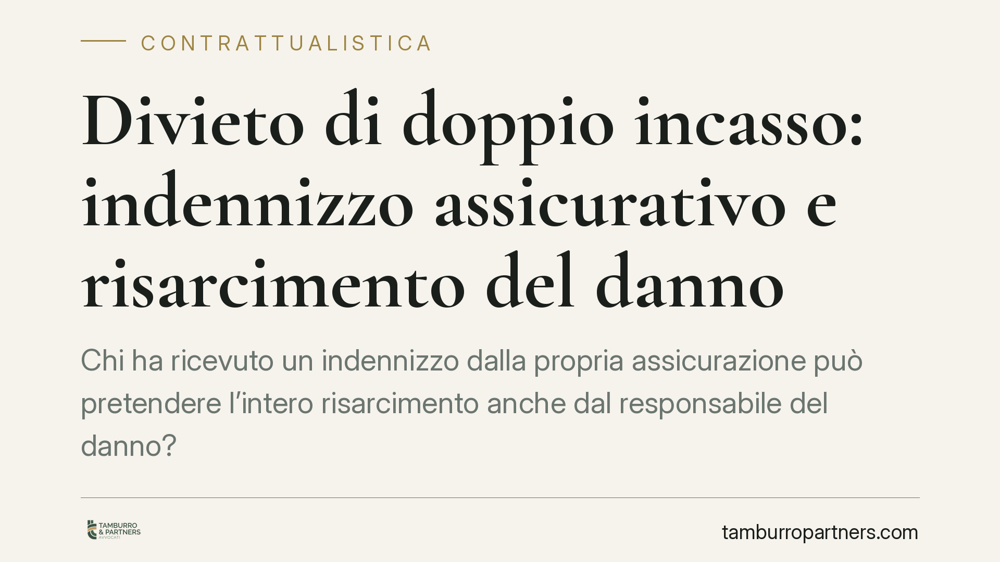

Divieto di doppio incasso: indennizzo assicurativo e risarcimento del danno
Chi ha ricevuto un indennizzo dalla propria assicurazione può pretendere l'intero risarcimento anche dal responsabile del danno? La risposta, consolidata in giurisprudenza, è negativa quando si tratta della medesima voce di danno. Il fondamento è il principio indennitario: l'assicurazione contro i danni non può diventare occasione di arricchimento. Vediamo come opera il divieto e cosa implica in concreto.

Il caso
Lo scenario è ricorrente: un soggetto subisce un infortunio causato da un terzo. Riceve un indennizzo dalla propria compagnia in forza di una polizza infortuni o malattia. Successivamente agisce in giudizio contro il responsabile per ottenere l'intero risarcimento del danno, senza scomputare quanto già percepito dall'assicuratore.
La questione è se questo "doppio incasso" sia legittimo. Il punto diventa più delicato quando la polizza contiene una clausola di rinuncia alla surrogazione: il danneggiato sostiene che, avendo l'assicuratore rinunciato a rivalersi sul terzo, nulla osta a che egli trattenga sia l'indennizzo sia il risarcimento pieno.
Inquadramento normativo
Il cardine è il principio indennitario, codificato all'art. 1905 c.c.: nell'assicurazione contro i danni l'assicuratore è tenuto a risarcire il danno effettivamente sofferto, non oltre. La polizza serve a ripristinare il patrimonio leso, non a generare un lucro.
L'art. 1916 c.c. disciplina la surrogazione: l'assicuratore che ha pagato l'indennizzo subentra nei diritti dell'assicurato verso il terzo responsabile, fino alla concorrenza di quanto versato. È il meccanismo con cui l'ordinamento evita che il responsabile resti indenne.
Va chiarito un punto spesso frainteso. L'art. 1916 c.c. opera sul rapporto tra assicuratore e terzo. La rinuncia alla surrogazione — pattuizione lecita tra compagnia e assicurato — incide solo su quel rapporto: impedisce alla compagnia di rivalersi sul responsabile. Non tocca, invece, il principio indennitario nel distinto rapporto tra danneggiato e responsabile.
Il fondamento del divieto di cumulo dal lato del danneggiato è la compensatio lucri cum damno, cioè il principio per cui dal danno risarcibile va detratto il vantaggio che dallo stesso fatto illecito sia derivato al danneggiato. Le Sezioni Unite della Cassazione, con le sentenze nn. 12564-12567 del 22 maggio 2018, hanno fissato i criteri: il diffalco opera quando il beneficio collaterale (qui, l'indennizzo) ha funzione compensativa dello stesso pregiudizio e proviene da una provvista destinata a coprire quella precisa perdita.
Tradotto: se l'indennizzo assicurativo copre una voce di danno, quella stessa voce non può essere pretesa una seconda volta dal responsabile.
Implicazioni pratiche
Gli effetti si leggono distinguendo le tre posizioni coinvolte.
Il danneggiato (assicurato). Non può cumulare, per la medesima voce di danno, l'indennizzo già percepito e il risarcimento integrale dal terzo. Dal credito risarcitorio va scomputato quanto incassato dalla compagnia per la stessa posta.
La compagnia assicuratrice. Se ha rinunciato alla surrogazione, non recupera dal terzo quanto pagato. Resta ferma la sua obbligazione indennitaria entro i limiti del danno effettivo.
Il terzo responsabile. Beneficia del diffalco: risponde del danno al netto di quanto il danneggiato abbia già ricevuto a titolo compensativo per la stessa voce.
Un chiarimento decisivo: il divieto opera per voce di danno effettivamente coperta, non tra poste diverse e non sovrapponibili. Se l'indennizzo copre, ad esempio, le spese mediche, nulla impedisce di chiedere al terzo il danno biologico o morale non coperto dalla polizza. Occorre dunque confrontare, voce per voce, ciò che la polizza ha ristorato e ciò che si domanda al responsabile.
Rilevante anche la natura della polizza. Nelle polizze di puro indennizzo (danno) il principio indennitario opera pienamente. Nelle polizze con componenti di natura previdenziale o forfettaria svincolate dal danno effettivo, la sovrapponibilità con il risarcimento va verificata caso per caso.
Cosa fare in concreto
- Qualifica la natura della polizza: verifica se si tratta di copertura indennitaria del danno o di prestazione forfettaria di tipo previdenziale, perché cambia l'operatività del diffalco.
- Controlla la clausola di rinuncia alla surrogazione: ricorda che incide sul rapporto compagnia/terzo, non legittima il doppio incasso nel rapporto con il responsabile.
- Scomponi il danno per voci: isola ogni posta (spese mediche, danno biologico, perdita di reddito, danno morale) e verifica quale sia stata già coperta dall'indennizzo.
- Documenta gli incassi: conserva prova di quanto percepito dalla compagnia e a quale titolo, per quantificare correttamente l'importo residuo esigibile dal terzo.
- Imposta la domanda con il diffalco già calcolato: è opportuno quantificare la pretesa verso il responsabile tenendo conto dell'indennizzo già ricevuto per le voci sovrapponibili.
Conclusione
Il divieto di doppio incasso non è una penalizzazione, ma l'applicazione coerente del principio indennitario e della compensatio lucri cum damno. La chiave è la scomposizione analitica delle voci di danno: solo così si distingue ciò che è già stato compensato da ciò che resta legittimamente esigibile. Un'impostazione approssimativa del calcolo espone al rischio di vedersi ridurre la pretesa in giudizio.
Ogni contratto ha il suo equilibrio.
Se vuoi una revisione delle clausole o una redazione su misura, scrivi allo studio. Ti rispondiamo entro un giorno lavorativo.